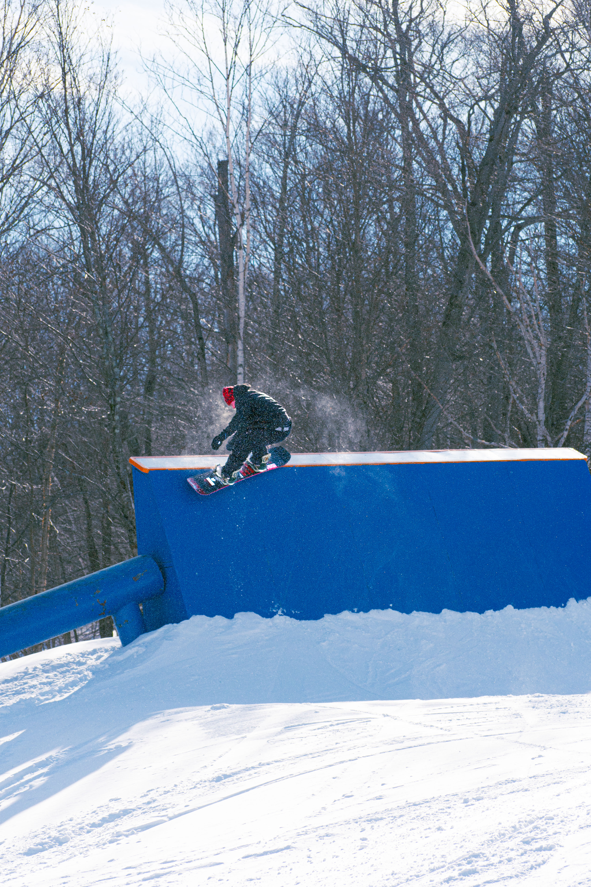
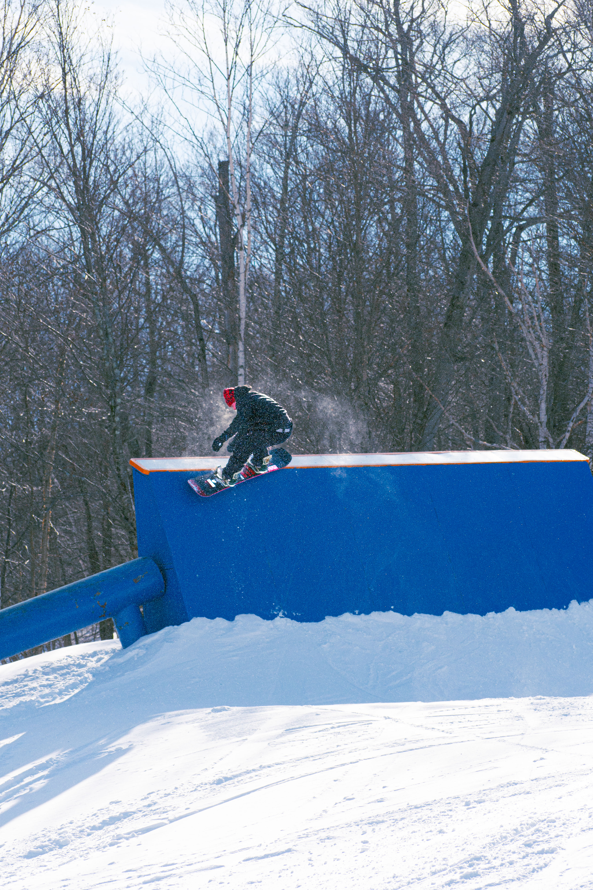
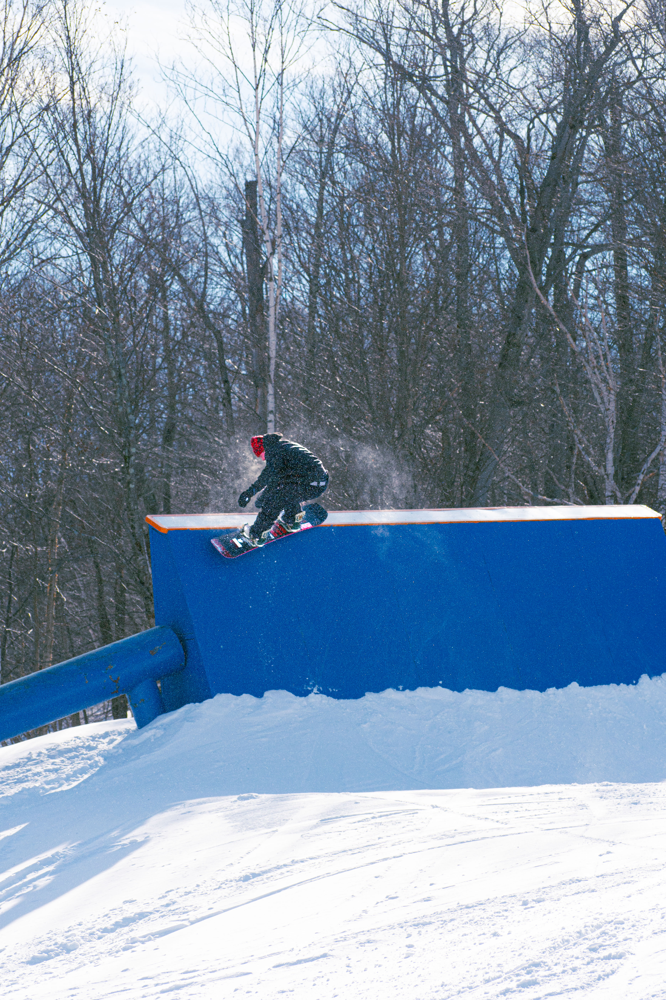

Freestyle snowboarding involes acrobatic and technical physical manuvers on jumps and rails. Freestlye snowboarding includes different categories such as park riding, backcountry, and street. More info on backcountry can be found here. Park riding is done at ski resorts that have a terrain park. Terrain parks usually include jumps and rails for riders to hit. Street snowboarding, surprisingly, is done in the streets. This present can more challenges:
